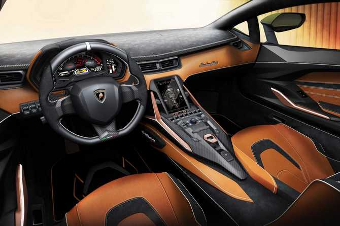

Terbaru, Lamborghini sebagaimana dikutip dari Motor1, Jumat (6/9), baru saja mengungkapkan mobil listrik mereka. Mobil listrik perdana Lamborghini diberi nama Lamborghini Sian. Meski begitu, Sian masih membawa mesin combustion V12 N/A khas Lamborghini. Dengan kata lain, Lamborghini Sian debut sebagai mobil Hybrid.
Supercar ini mengandalkan mesin N/A 6,5 liter V12 yang sama yang juga digunakan oleh Lamborghini SVJ. Namun, mesin tersebut juga disertai dengan sistem hybrid ringan 48 volt, yang menambah 34 daya kuda (25 kilowatt) dengan total 819 hp (602 kW). Angka-angka kontan mengubah Sian baru menjadi produksi Lamborghini paling kuat yang pernah ada, mengambil mahkota dari 770-hp (566-kW) SVJ.
Semua tenaga itu dialihkan ke roda melalui gearbox otomatis tujuh kecepatan dengan karakteristik shift adaptif tergantung pada mode mengemudi. Fitur itu dikawinkan dengan sistem penggerak all wheel drive yang dikontrol secara elektronik dengan diferensial penguncian otomatis belakang mekanis.
Sementara daya naik dibandingkan dengan SVJ, dengan waktu akselerasi 0 hingga 62 mil per jam (0-100 kilometer per jam). Sprint hanya membutuhkan 2,8 detik dan kecepatan tertinggi diatur secara elektronik pada 217 mph (350 km per jam).
Dalam hal desain, mungkin aman dikatakan Sian meminjam sebagian besar elemen desainnya dari Terzo Millennio. Model terbaru itu datang dari Sant’Agata Bolognese dengan garis agresif dan sudutnya serta proporsi supercar yang sempurna. Buritan terdapat enam lampu belakang LED heksagonal yang sangat sesuai dengan ujung knalpot yang menampilkan bentuk dasar yang sama.
 “Lamborghini tercepat harus menjadi pesta visual dan simfoni, yang luar biasa bagi mereka yang melihatnya sebagai orang yang istimewa untuk mengendarainya,” ujar Mitja Borkert, Kepala Desain di Lamborghini. “Butuh inspirasi dari Countach, tetapi Sian adalah ikon futuristik, bukan retrospektif,” lanjutnya.
Tentang lencana ’63’ pada sirip hiu serat karbon kecil di belakang, itu menunjukkan jumlah contoh yang akan dibuat oleh Lamborghini. Hanya 63 pelanggan yang beruntung mendapatkan kesempatan untuk membeli Sian dengan harga mulai USD 3,6 juta atau setara dengan Rp 51,4 miliar. Menariknya lagi, sebanyak 63 mobil Lamborghini Sian sudah dipesan.